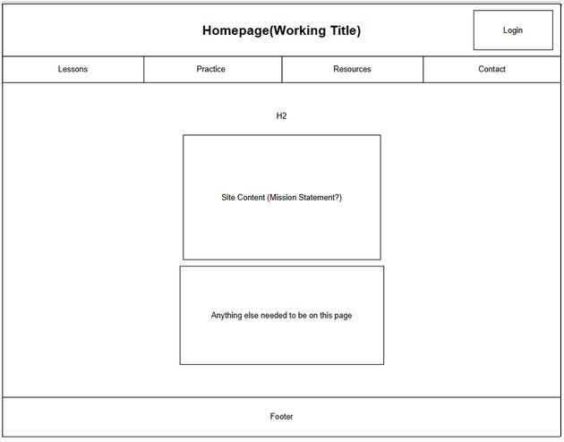
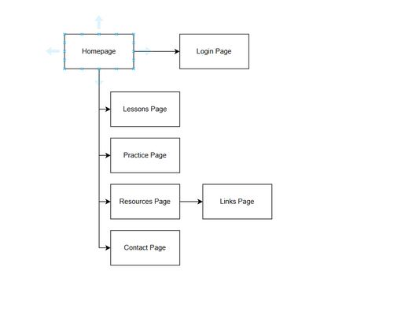

Client Project Overview
Purpose: The goal of this project is to create an interactive learning website that helps students who are new to JavaScript understand core programming concepts through explanations, examples, and hands-on exercises. The site will provide short tutorials, code snippets, and interactive elements (like quizzes and code examples) to make learning more engaging and self-paced. The website will serve as a free educational resource designed to help beginners practice basic JavaScript programming concepts without needing external software — everything will run directly in the browser.
Intended Users: Students who are beginning to learn JavaScript, Classmates or peers who want a quick reference or practice resource, Anyone interested in web development fundamentals
Overview of content:
- A Home page introducing the site and its learning goals
- A Lessons page containing short JavaScript tutorials and code examples
- A Practice page where users can interact with small exercises (quiz or live coding)
- A Resources page linking to helpful tutorials, docs, and videos
- A Links page containing links to external resources
- A Contact page for feedback or questions
Client Information
Name of the client: Sam Mathews
Organization/Institute/Business the client/s are associated with: University of North Carolina at Charlotte (STUDENT)
Client’s valid email address: smathe17@charlotte.edu
Client’s phone number: [Private]
Site Map
Layout
Homepage
Name of Page: Homepage
Purpose: To introduce visitors to the Learn JavaScript site, explain its purpose, and guide them toward lessons and practice activities.
Content:
- Site title and tagline (“Learn JavaScript – A Beginner-Friendly Guide”)
- Brief introduction paragraph
- “Start Learning” button linking to the Lessons page
- Overview of what the site offers (Lessons, Practice, Resources)
- Navigation bar and footer (consistent across site)
Enter Data? (Y/N): N
Data Validation? (Y/N): N
Contain Links? (Y/N): Y (navigation bar, “Start Learning” button, footer links)
Actions?: Clicking navigation links takes the user to Lessons, Practice, Resources, or Contact pages. “Start Learning” button scrolls smoothly to the Lessons page.
Special Notes: Homepage will include a hero image or simple JavaScript animation in the background (optional visual element).
Homepage → Login Page
Name of Page: Login Page
Purpose: To provide a simple mock login form allowing users to “log in” before accessing the main learning materials. (Note: No real database or authentication; only front-end simulation.)
Content:
- Username and Password input fields
- “Login” and “Clear” buttons
- Link to “Forgot Password?” (static link for now)
- Message area for displaying validation or success text
Enter Data? (Y/N): Y (username, password)
Data Validation? (Y/N): Y (check for empty fields)
Contain Links? (Y/N): Y (to Homepage and optional “Forgot Password?” placeholder)
Actions?: Clicking “Login” triggers JavaScript validation; if fields are not empty, display message like “Welcome, [Username]!” and redirect to Homepage. Clicking “Clear” resets input fields.
Special Notes: This page will simulate authentication entirely on the client side using JavaScript (no data storage).
Homepage → Lessons Page
Name of Page: Lessons
Purpose: To teach users JavaScript fundamentals using short lessons, code snippets, and “try-it-yourself” examples.
Content:
- Lesson topics: Variables and Data Types, Functions and Loops, DOM Manipulation
- Interactive code boxes where users can type and run simple JavaScript commands.
- Expandable accordion sections using jQuery UI for each topic.
Enter Data? (Y/N): Y (user types in code examples)
Data Validation? (Y/N): N (no saved input, only browser-run examples)
Contain Links? (Y/N): Y (links to related topics and external tutorials)
Actions?: When user clicks “Run Code,” JavaScript executes the sample code and displays output in a result box. Clicking lesson titles expands/collapses lesson details.
Special Notes: Page will use jQuery accordion and inline JavaScript execution (eval() in sandboxed <iframe>).
Homepage → Practice Page
Name of Page: Practice
Purpose: To provide simple quizzes and exercises to test users’ understanding of JavaScript concepts.
Content:
- Multiple-choice quiz questions with “Check Answer” buttons
- Small code challenges (predict-the-output exercises)
- Feedback messages (“Correct!” or “Try Again”) displayed dynamically
Enter Data? (Y/N): Y (selecting answers, typing short code)
Data Validation? (Y/N): Y (ensure a choice is selected before showing feedback)
Contain Links? (Y/N): Y (link to Lessons and Resources pages)
Actions?: Clicking “Check Answer” triggers JavaScript function to display feedback. “Next Question” button loads another quiz item using AJAX.
Special Notes: Will include a small score tracker showing quiz progress using local JavaScript variables (no saved data).
Homepage → Resources Page
Name of Page: Resources
Purpose: To share additional learning materials such as tutorials, reference sites, and recommended videos for deeper JavaScript study.
Content:
- Organized list of external links to resources: W3Schools, MDN Web Docs, YouTube Playlist
- Optional embedded YouTube video explaining JavaScript basics.
Enter Data? (Y/N): N
Data Validation? (Y/N): N
Contain Links? (Y/N): Y (to external websites and subpage “Links Page”)
Actions?: Clicking links opens resources in new tabs. Clicking internal link navigates to Links Page.
Special Notes: Will include an interactive collapsible list using jQuery UI accordion for organizing resource categories (Docs, Videos, Tools).
Resources → Links Page
Name of Page: Links Page
Purpose: To list and categorize external JavaScript learning websites in one place.
Content:
- Categories: Documentation, Tutorials, Practice Platforms
- Links to MDN, W3Schools, FreeCodeCamp, Codecademy, and others
- Short descriptions under each link
Enter Data? (Y/N): N
Data Validation? (Y/N): N
Contain Links? (Y/N): Y (external links)
Actions?: Clicking any link opens the external site in a new browser tab.
Special Notes: This page is linked directly from the Resources page.
Homepage → Contact Page
Name of Page: Contact
Purpose: To allow visitors to send feedback, ask questions, or suggest topics for future lessons.
Content:
- Contact form (Name, Email, Message)
- Submit and Reset buttons
- Links to GitHub and social media (optional)
Enter Data? (Y/N): Y
Data Validation? (Y/N): Y (ensure all required fields are filled)
Contain Links? (Y/N): Y (social links, email)
Actions?: When user clicks “Submit,” JavaScript validates fields and opens mailto link or displays confirmation message. Reset button clears form fields.
Special Notes: Form uses JavaScript for validation, but no data is stored (read-only interaction only).